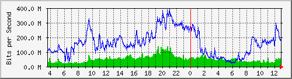
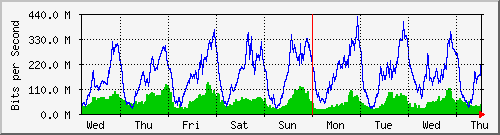
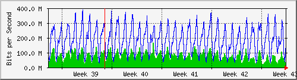
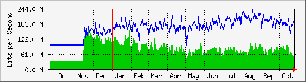

Traffic Analysis for Gi1/0/10 -- spider.sky
| System: | spider.sky in stoyka |
| Maintainer: | falcon@skyinet.org |
| Description: | GigabitEthernet1/0/10 3825cisco |
| ifType: | ethernetCsmacd (6) |
| ifName: | Gi1/0/10 |
| Max Speed: | 1000.0 Mbits/s |
| Ip: | No Ip (No DNS name) |
The statistics were last updated Thursday, 26 October 2017 at 12:55,
at which time 'spider.sky' had been up for 8 days, 10:32:41.
`Daily' Graph (5 Minute Average)

|
Max |
Average |
Current |
| In |
137.5 Mb/s (13.7%) |
50.5 Mb/s (5.1%) |
56.6 Mb/s (5.7%) |
| Out |
391.3 Mb/s (39.1%) |
162.6 Mb/s (16.3%) |
185.9 Mb/s (18.6%) |
`Weekly' Graph (30 Minute Average)

|
Max |
Average |
Current |
| In |
139.9 Mb/s (14.0%) |
55.5 Mb/s (5.5%) |
43.4 Mb/s (4.3%) |
| Out |
426.4 Mb/s (42.6%) |
172.1 Mb/s (17.2%) |
253.3 Mb/s (25.3%) |
`Monthly' Graph (2 Hour Average)

|
Max |
Average |
Current |
| In |
167.3 Mb/s (16.7%) |
73.4 Mb/s (7.3%) |
32.6 Mb/s (3.3%) |
| Out |
386.6 Mb/s (38.7%) |
180.8 Mb/s (18.1%) |
158.8 Mb/s (15.9%) |
`Yearly' Graph (1 Day Average)

|
Max |
Average |
Current |
| In |
160.4 Mb/s (16.0%) |
77.2 Mb/s (7.7%) |
55.1 Mb/s (5.5%) |
| Out |
240.6 Mb/s (24.1%) |
165.1 Mb/s (16.5%) |
183.6 Mb/s (18.4%) |
| GREEN ### |
Incoming Traffic in Bits per Second |
| BLUE ### |
Outgoing Traffic in Bits per Second |